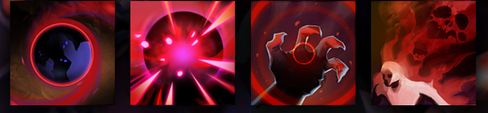

SHADOW DEMON
STACKS EXPONENTIAL POISON DAMAGE AGAINST HIS FOES
HISTORY
Among the sovereign Demons with explicit access to this world, Doom scarcely bothers with the affairs of Noninfernals and Lesser Spectral Consorts, while Shadow Fiend passes through almost exclusively on collecting expeditions. The Shadow Demon, however, has always taken a deep and abiding interest in the material plane, as if sensing that mastery of this gritty dimensional nexus might be the key to total domination of all realities. Summoned first by minor wizards, the Shadow Demon granted every wish and put on increasingly impressive displays of power until he had the full attention of the greatest demonologists, and through them the various lords, tyrants, autarchs and heirophants who depended on sorcery to buttress their mundane power. So great was his deception that all his summoners considered themselves the master and Shadow Demon the servant; meanwhile, he eroded their identities and made their minds his own. In the end, most members of the cult were hollow puppets, extensions of his evil will.
ABILITIES
PAIRD WELL WITH
lina
VIPER
MEDUSA